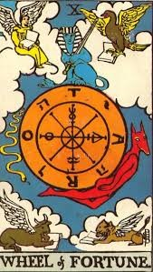

Habla con un tarotista ahora
ConsultarCREACIÓN Y MANIFESTACIÓN CONSCIENTE
Redactor: Valentina


Todos los seres humanos tenemos la capacidad de manifestar y crear cosas en la realidad, el problema es que la mayoría de las personas pasa la mayor parte de su vida creando de forma inconsciente (¿O acaso nunca has oído hablar del inconsciente colectivo?).
CREAMOS DE FORMA INCONSCIENTE
La creación y manifestación consciente requiere reconocer que hay un poder en nosotros, que tenemos responsabilidad sobre la vida que estamos creando.
El primer paso para romper un esquema negativo es reconocerlo, pero si no somos capaces de ver, no podremos modificarlo. Y después de verlo, si de verdad quieres cambiar las cosas, tendrás que aceptar el grado de responsabilidad que tengas en ello o más aún… aceptar el desafío de cambiarlo, y ello implica un esfuerzo, un camino de aprendizaje consciente que no todas las personas están dispuestas a transitar, porque usualmente requiere tiempo, trabajo y esfuerzo. Así que sí, una lectura de tarot con el enfoque adecuado te puede ser muy útil para crear tu futuro y cambiar tu vida, pero créeme que no depende tanto de las cartas, sino de tu propio nivel de conciencia y voluntad ante los escenarios que te sean revelados por el tarot.

EL TAROT COMO ESPEJO DE TUS FUTUROS POSIBLES
Cómo mencioné en mi entrada anterior sobre el tarot y el destino, no existen verdades absolutas, para mí, el mayor potencial del tarot es ser una herramienta de conexión que permite mirar dentro de ti mismo, de ti misma y mostrarte que futuros posibles estás construyendo en base a tu energía del presente; entendiendo el tiempo presente como ese momento en que decides hacerte una lectura de tarot. Si te gusta lo que vez, sigue así, si no te gusta, algo debes cambiar, y en esos casos siempre es bueno pedir consejos a las cartas para mover tus energías o usarlas para canalizar información desde tus guías o de otros planos, porque como dicen por ahí “en pedir no hay engaño” pero recuerda que el poder está en ti, que finalmente eres tú quien decide si tomar los consejos o no, si abrirte a recibir ayuda o no.
DESTINO Y LIBRE ALBEDRÍO
Ahora, después de todo lo escrito y si también te tomaste el tiempo de leer mi primera entrada, debo decirte que también hay un destino, sólo que no estás obligado, ni encadenado a él, tú tienes tu libre albedrío y siempre hay un punto donde somos libres de elegir, de eso se trata este juego de la vida.
Para algunos, ese destino lo escribió la misma persona antes de encarnar en la tierra, antes de nacer, cuando estaba en otros planos, para otros hay un dios que escribe ese destino, para otros se trata de la evolución del alma, que viene con el propósito de experimentar o aprender algo y así hay infinitas creencias y estas creencias se vuelven verdades para quien pone su fé en ellas. Por eso es que yo siempre invito a mis consultantes a creer también en sí mismos y a conectar con su propio poder interior, para que se vuelvan así dueños y creadores de su propio destino.
¿Y tú? ¿Qué estás esperando para empezar a crear y manifestar conscientemente?
Empieza a mover tus energías
Haz una tirada de tarot gratuita y descubre qué futuros posibles estás creando con tu energía del presente.
Tirada de tarot gratis Tarot sí o noPreguntas frecuentes sobre la manifestación consciente
¿Qué es la manifestación consciente?
La manifestación consciente consiste en reconocer que tenemos un poder creador y una responsabilidad sobre la vida que estamos creando, en lugar de crear de forma inconsciente. Implica ver nuestros patrones, aceptar nuestra responsabilidad y decidir cambiarlos.
¿Cómo ayuda el tarot a manifestar?
El tarot es una herramienta de conexión que te permite mirar dentro de ti y ver qué futuros posibles estás construyendo con tu energía del presente. Te muestra escenarios y consejos, pero el poder de cambiar las cosas está en ti.
¿El destino existe si tenemos libre albedrío?
Existe un destino, pero no estamos encadenados a él. Siempre hay un punto donde somos libres de elegir. Conectar con tu poder interior te convierte en dueño y creador de tu propio destino.